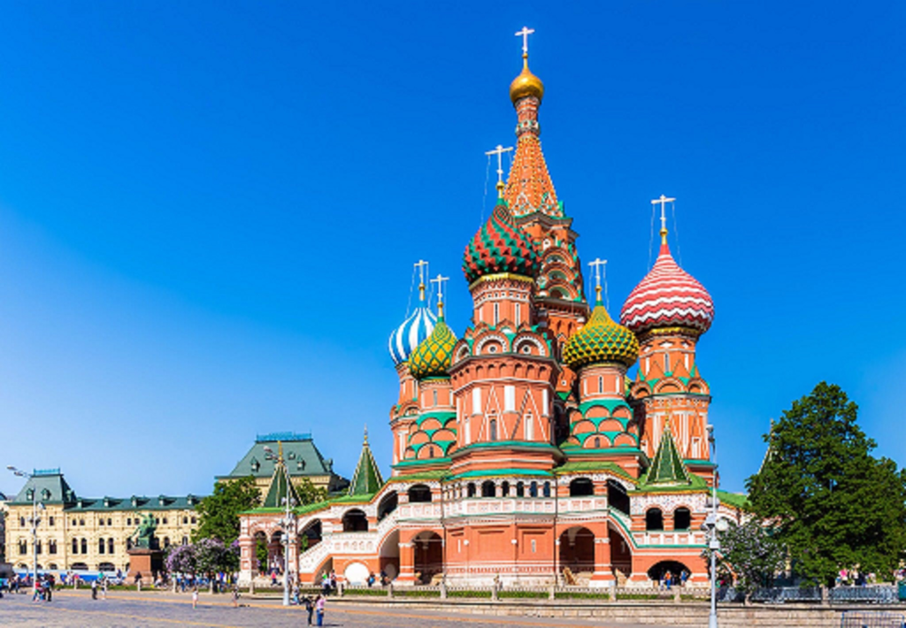

DESCUBRA RUSSIA
Kremlim
A visão do Kremlin de Moscou coberto de neve pode ser considerada como um dos cartões postais mais característicos do país! O Kremlin é um complexo fortificado que fica bem no coração de Moscou, a capital da Rússia, à margem do Rio Moskva. O local em si é uma grande obra de arte, começando pelos muros com 20 torres. A mais famosa é a Torre do Salvador (Spasskaya), construída em 1491. A entrada principal é pela Catedral de São Basílio, a mais famosa de todo o país.
Hermitage
O Hermitage fica na icônica São Petersburgo, às margens do Rio Neva. O museu inteiro é separado em 10 prédios, todos próximos ao rio. O Palácio de Inverno, prédio principal do museu, é um dos marcos da Revolução Russa.
Sochi
A cidade de Sochi, uma pequena cidade costeira que fica aos pés da Cordilheira do Cáucaso e em frente ao Mar Negro, é um dos destinos favoritos dos nativos durante o verão. Certamente, se você estiver lá durante esse período, poderá aproveitar a cidade como um russo nato!